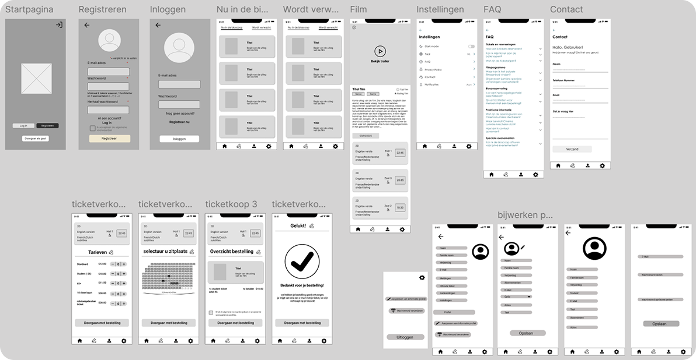

Lumière cinema Mechelen
Voor dit schoolproject ontwierp ik een mobiele app voor Lumière Cinema in Mechelen. Lumière is een onafhankelijke bioscoopketen met een sterk herkenbare identiteit. De opdracht was om de bestaande gebruikerservaring te analyseren en een mobiele app-ervaring te ontwerpen die voldoet aan de 21 UX Laws die we in de les behandelden.
Het project startte als groepsopdracht, waarbij we de bestaande Lumière-website benchmarkten tegen de UX Laws en gezamenlijke wireframes uitwerkten. Daarna werkte ik individueel verder aan de high-fidelity designs in Figma. Ik gebruikte de bestaande Lumière-branding, aangezien de klant al een herkenbare visuele identiteit heeft.
Projectcard
- Projectnaam
- Lumière Cinema Mechelen
- Type
- Schoolproject, groeps- en individueel project
- Duur
- Februari - juni 2025
- Tools
- Figma
- Focusgebieden
- UX Laws, app design, interaction design, variables, dark mode

De opdracht
De leerkracht gaf ons een duidelijke briefing: analyseer de bestaande Lumière-website en vergelijk deze met de 21 UX Laws die we in de les hadden geleerd. Werk vervolgens in groep wireframes uit voor een mobiele app, waarna elk groepslid individueel verder werkte aan high-fidelity designs.
We moesten twee versies ontwerpen: één voor een gebruiker die al minstens één jaar de app gebruikt en één voor een nieuwe gebruiker. Het design moest onder andere een favorietenlijst bevatten, een zoekfunctie met variabele, een pagina voor gekochte tickets, een meldingenpagina en verschillende pop-ups.
Daarnaast moesten we werken met variabelen in Figma. Ik koos ervoor om bij accountbeheer een variabele te maken waarmee gebruikers hun profielfoto kunnen veranderen en kiezen tussen verschillende opties. Ook moest er een dark-modeversie zijn die via de instellingen kan worden geactiveerd.
Tijdlijn van het project
-
Research en benchmark
Bestaande website
-
User stories en
flowchart
- Wireframes
- User testing
-
Functionaliteiten en
variabelen
- Eindresultaat
Benchmark bestaande website
Als eerste analyseerde onze groep de bestaande Lumière-website. We vergeleken de website met de 21 UX Laws die we in de les hadden geleerd. Dit omvatte wetten zoals de Wet van Fitts, de Wet van Hick, het Verschilprincipe en de Wet van Nabijheid.
We identificeerden sterke punten, zoals de duidelijke visuele identiteit en de focus op filmbeleving, maar ook verbeterpunten. Sommige interacties waren minder intuïtief, bepaalde informatie was moeilijk vindbaar en de flow voor het kopen van tickets kon worden vereenvoudigd.
Van groepswireframes naar individueel design
Na de benchmark werkten we als groep een set wireframes uit. Deze wireframes vormden de basisstructuur voor de app en omvatten de volgende schermen: startpagina, registreren, inloggen, nu in de bioscoop, wordt verwacht, filmpagina, instellingen, FAQ, contact, ticket kopen en accountbeheer.
Ik heb de wireframes voor “nu in de bioscoop” en “wordt verwacht” gemaakt.

Vanuit deze gezamenlijke wireframes ging ik individueel verder met het high-fidelity design. Ik behield de basisstructuur, maar verfijnde de interacties, de visuele hiërarchie en de micro-interactions.
Ik werkte zowel een versie uit voor een gebruiker van één jaar als een versie voor een nieuwe gebruiker, waarbij ik rekening hield met de verschillende behoeften en verwachtingen van deze twee doelgroepen.
Functionaliteiten en interacties
De app bevat verschillende kernfunctionaliteiten die ik uitwerkte in het design. De favorietenlijst stelt gebruikers in staat om films toe te voegen aan een persoonlijke lijst, zodat ze snel kunnen terugkeren naar films die hen interesseren.
De zoekfunctie heeft een variabele waarmee gebruikers kunnen typen die films zoeken. Een eerder gekochte ticketpagina toont de tickets die gebruikers al hebben gekocht, zodat ze hun reserveringen snel kunnen raadplegen. De meldingenpagina informeert gebruikers over nieuwe films, speciale aanbiedingen en andere relevante updates.
Ik ontwierp ook verschillende pop-ups. Bij verlies van internetverbinding verschijnt een pop-up met een geanimeerde wifi-icon. Bij het verzenden van het contactformulier verschijnt een bevestigingspop-up die de gebruiker geruststelt dat het bericht werd verzonden. Bij het verlaten van de ticket-bestelpagina verschijnt een pop-up die vraagt of de gebruiker zeker is dat hij of zij de flow wil verlaten.
Werken met variables
Een belangrijk onderdeel van de opdracht was het werken met variables in Figma. Ik koos ervoor om bij accountbeheer een variable te maken waarmee gebruikers hun profielfoto kunnen veranderen.
Gebruikers kunnen tussen verschillende profielfoto’s kiezen en zien direct hoe hun profiel eruitziet met de gekozen foto.
Daarnaast werkte ik met een variable bij het aankopen van tickets. Gebruikers kunnen via een plus- en minfunctie tickets toevoegen of verwijderen, waarna het totaal automatisch wordt aangepast.
Dit creëert een dynamische en interactieve ervaring die direct feedback geeft.
Resultaat
Het eindresultaat is een mobiele app voor Lumière Cinema die niet alleen visueel aantrekkelijk is, maar ook gebruiksvriendelijk en interactief. De app bevat alle vereiste functionaliteiten, met aandacht voor detail, micro-interactions en een consistente visuele identiteit.
Ik ontwierp twee versies van de app: één voor een gebruiker die al minstens één jaar de app gebruikt en één voor een nieuwe gebruiker. Deze twee doelgroepen hebben verschillende behoeften en verwachtingen.
Een gebruiker van één jaar kent de app al, heeft mogelijk al favorieten, gekochte tickets en meldingen. Deze gebruiker verwacht snel toegang tot zijn of haar content en een vloeiende ervaring. Een nieuwe gebruiker ontdekt de app voor het eerst en heeft behoefte aan duidelijke uitleg, eenvoudige navigatie en een aangename eerste ervaring.
Voor de nieuwe gebruiker ontwierp ik daarom empty states voor de meldingenpagina, favorietenlijst en gekochte tickets-pagina. Deze empty states bevatten geanimeerde icons die de lege visueel aantrekkelijk maken en de gebruiker uitnodigen om de functionaliteiten te ontdekken.